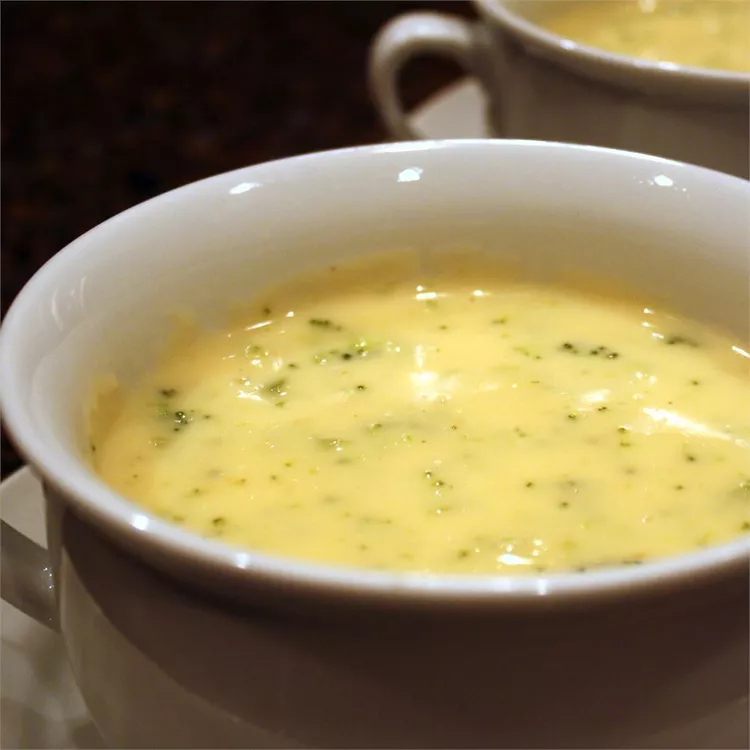

Broccoli Cheese Soup

This broccoli cheese soup is very flavorful.
It's great for serving at luncheons or special gatherings with a quiche.
To make it a little fancier,
add 1 cup sliced mushrooms and 1 cup white wine with the onions.
Ingredients
- 0.5 cup butter
- 1 onion, chopped
- 1 (16 ounce) package frozen chopped broccoli
- 4 (14.5 ounce) cans chicken broth
- 1 (1 pound) loaf processed cheese food, cubed
- 2 cups milk
- 1 tablespoon garlic powder
- ⅔ cup cornstarch
- 1 cup water
Directions
- Melt butter in a stockpot over medium heat.
Add onion and cook, stirring occasionally,
until softened. Stir in broccoli.
Add broth and simmer until broccoli is tender,
10 to 15 minutes.
- Reduce heat; add cheese cubes and stir until melted.
Stir in milk and garlic powder.
- Stir cornstarch and water together in a
small bowl until smooth. Stir into soup; cook,
stirring frequently, until thick.